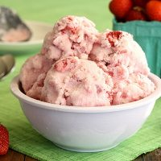

In a mixing bowl whisk together the buttermilk and jam until combined. Place into a pliable freezer proof covered container and freeze until solid. TIP: Run hot water around the outside to free the ice cream when releasing it without melting it.
Remove ice cream when frozen solid. Cut in to pieces and place into the chilled bowl of a stand up mixer equipped with the paddle mixing accessory. Install the plastic bowl collar on top of the mixing bowl or hold your hands over the top of the bowl as mixing begins. Once you being to mix the ice cream, chunks can fly out until they break into smaller pieces! Begin on low speed until frozen ice cream begins to breakdown. Then replace the paddle with a whisk accessory and beat on higher speed until it becomes light with no chunks.
Put ice cream back into a freezer container, pat down and cover. Refreeze. When fully frozen scoop out and serve.